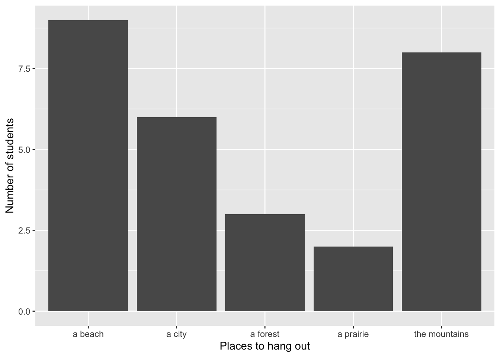
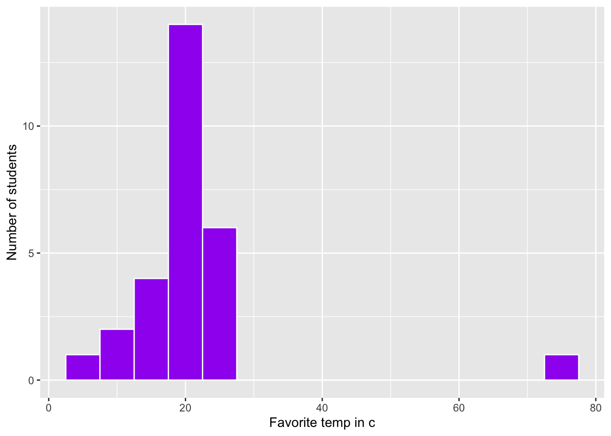
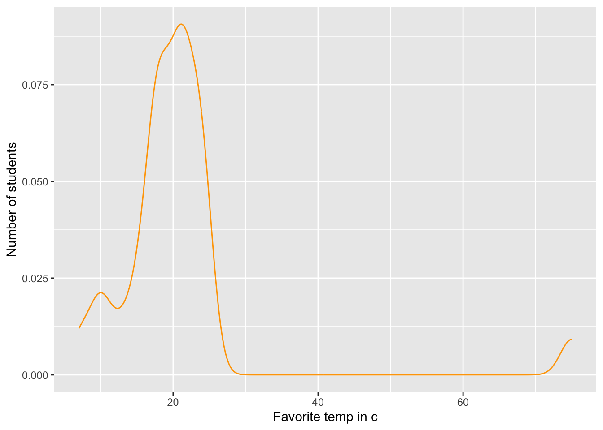
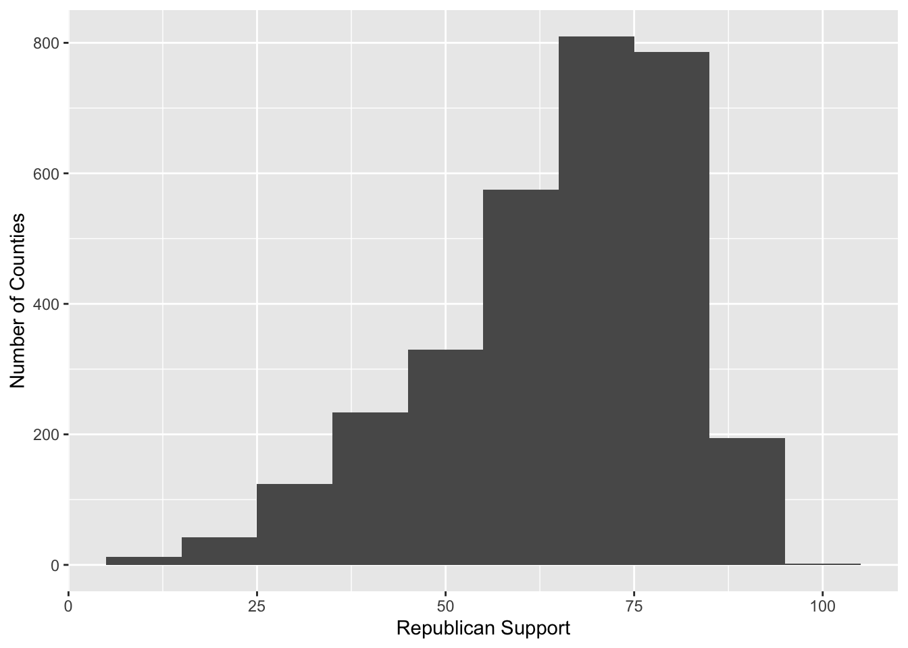
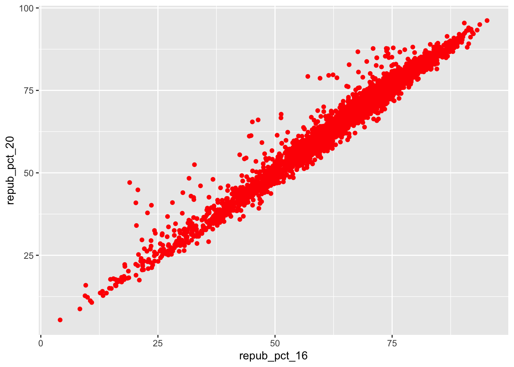
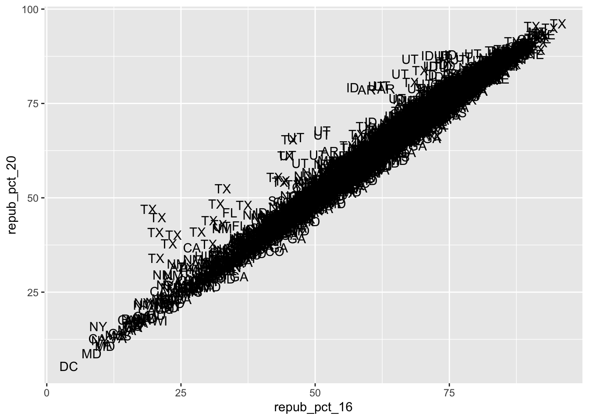
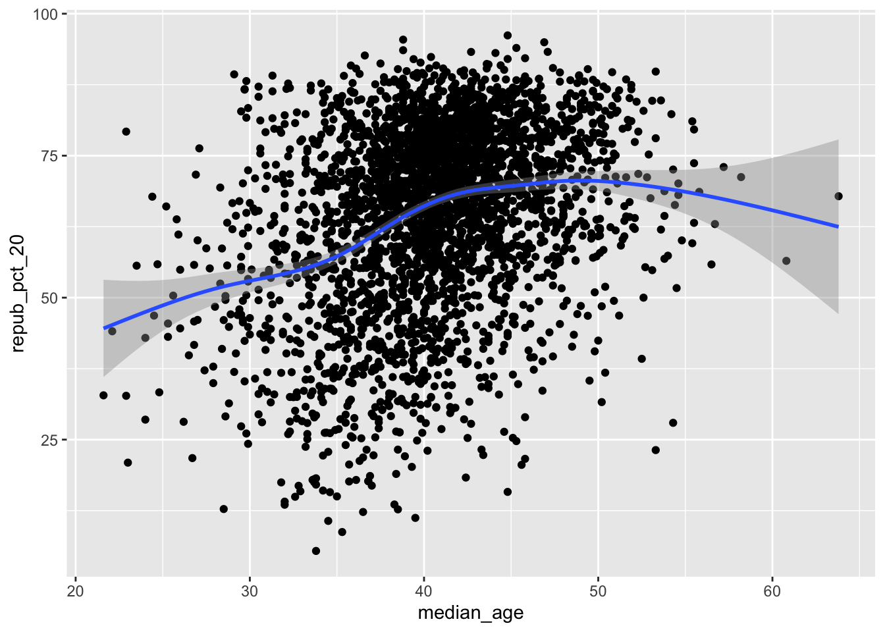
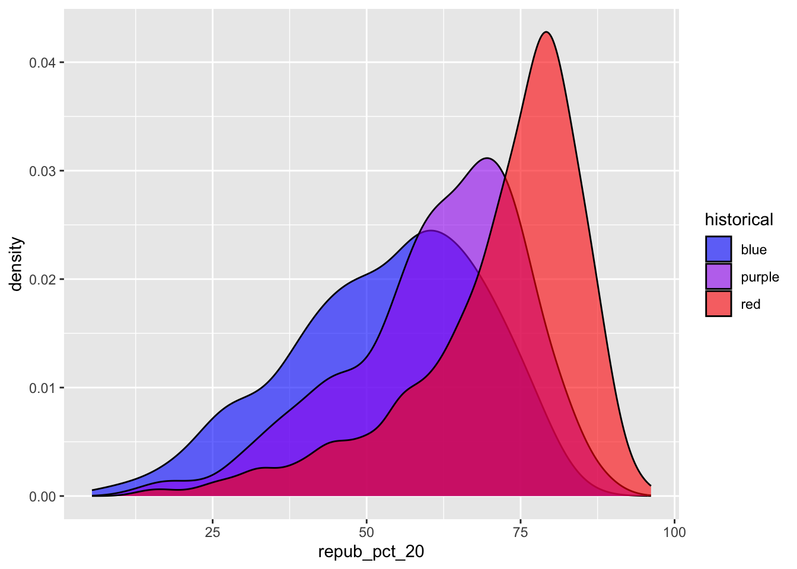
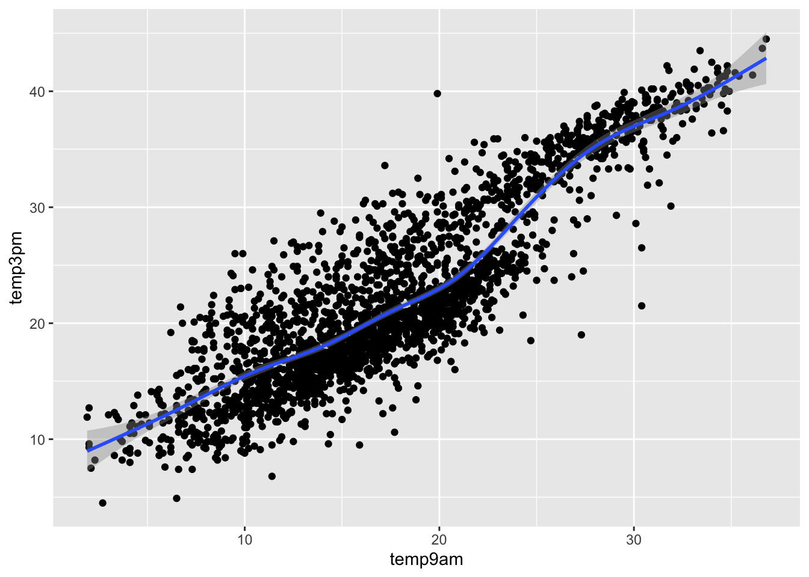
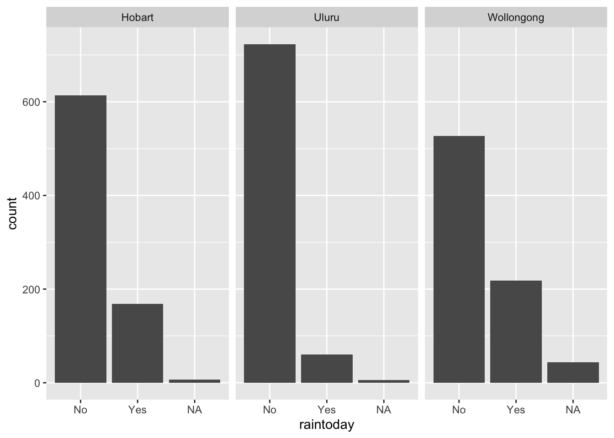

Use this file for practice with the bivariate viz in-class activity. Refer to the class website for details.
Code
# Import datasurvey <-read.csv("https://ajohns24.github.io/data/112/about_us_2024.csv")# How many students have now filled out the survey? 28nrow(survey)
[1] 28
Code
# What type of variables do we have? 4, ordinal and discretestr(survey)
'data.frame': 28 obs. of 4 variables:
$ cafe_mac : chr "Cheesecake" "Cheese pizza" "udon noodles" "egg rolls" ...
$ minutes_to_campus: int 15 10 4 7 5 35 5 15 7 20 ...
$ fave_temp : num 18 24 18 10 18 7 75 24 13 16 ...
$ hangout : chr "the mountains" "a beach" "the mountains" "a beach" ...
Code
# Attach a package needed to use the ggplot functionlibrary(tidyverse)# Make a ggplotggplot(survey, aes(x = hangout)) +geom_bar() +labs(x ="Places to hang out", y ="Number of students")

Code
ggplot(survey, aes(x = fave_temp)) +geom_histogram(color ="white", fill ="purple", binwidth =5) +labs(x ="Favorite temp in c", y ="Number of students")

around 20 typical response, one outlier in very high area, maybe they thought they should answer in degrees farenheight
Code
ggplot(survey, aes(x = fave_temp)) +geom_density(color ="orange") +labs(x ="Favorite temp in c", y ="Number of students")

Code
# Load dataelections <-read.csv("https://mac-stat.github.io/data/election_2020_county.csv")# Check it outhead(elections)
state_name state_abbr historical county_name county_fips total_votes_20
1 Alabama AL red Autauga County 1001 27770
2 Alabama AL red Baldwin County 1003 109679
3 Alabama AL red Barbour County 1005 10518
4 Alabama AL red Bibb County 1007 9595
5 Alabama AL red Blount County 1009 27588
6 Alabama AL red Bullock County 1011 4613
repub_pct_20 dem_pct_20 winner_20 total_votes_16 repub_pct_16 dem_pct_16
1 71.44 27.02 repub 24661 73.44 23.96
2 76.17 22.41 repub 94090 77.35 19.57
3 53.45 45.79 repub 10390 52.27 46.66
4 78.43 20.70 repub 8748 76.97 21.42
5 89.57 9.57 repub 25384 89.85 8.47
6 24.84 74.70 dem 4701 24.23 75.09
winner_16 total_votes_12 repub_pct_12 dem_pct_12 winner_12 total_population
1 repub 23909 72.63 26.58 repub 54907
2 repub 84988 77.39 21.57 repub 187114
3 repub 11459 48.34 51.25 dem 27321
4 repub 8391 73.07 26.22 repub 22754
5 repub 23980 86.49 12.35 repub 57623
6 dem 5318 23.51 76.31 dem 10746
percent_white percent_black percent_asian percent_hispanic per_capita_income
1 76 18 1 2 24571
2 83 9 1 4 26766
3 46 46 0 5 16829
4 75 22 0 2 17427
5 88 1 0 8 20730
6 22 71 0 6 18628
median_rent median_age
1 668 37.5
2 693 41.5
3 382 38.3
4 351 39.4
5 403 39.6
6 276 39.6
How many, or roughly what percent, of the 3000+ counties did the Republican candidate win in 2020?
Then discuss what follow-up questions you might have (and that our data might help us answer). What is the population of each county? How many counties flipped in 2020?
Code
ggplot(elections, aes(x = repub_pct_20)) +geom_histogram(binwidth =10) +labs(x ="Republican Support", y ="Number of Counties")

What follow-up questions do you have? How has this trend changed over time? What does the skewed data actually represent?
Code
# Set up the plotting frame# How does this differ than the frame for our histogram of repub_pct_20 alone? Both axes are numeric variables we're studyingggplot(elections, aes(y = repub_pct_20, x = repub_pct_16))
Code
# Add a layer of points for each county# Take note of the geom! geom pointggplot(elections, aes(y = repub_pct_20, x = repub_pct_16)) +geom_point()
Code
# Change the shape of the points# What happens if you change the shape to another number? The shape of the points changeggplot(elections, aes(y = repub_pct_20, x = repub_pct_16)) +geom_point(shape =3)
Code
# YOU TRY: Modify the code to make the points "orange"# NOTE: Try to anticipate if "color" or "fill" will be useful here. Then try both.ggplot(elections, aes(y = repub_pct_20, x = repub_pct_16)) +geom_point(color ="red", fill ="blue")

Code
# Add a layer that represents each county by the state it's in# Take note of the geom and the info it needs to run! text instead of point, label as changed to state abbrggplot(elections, aes(y = repub_pct_20, x = repub_pct_16)) +geom_text(aes(label = state_abbr))

Summarize the relationship between the Republican support in 2020 and 2016. Be sure to comment on:
the strength of the relationship (weak/moderate/strong) very strong relationship, it’s pretty linear
the direction of the relationship (positive/negative) positive slope
outliers (in what state do counties deviate from the national trend? Any ideas why this might be the case?) I see a few in Texas, there’s been a shift in recent years in big cities to be more democratic, especially amongst the migrant population
Code
ggplot(elections, aes(y = repub_pct_20, x = repub_pct_16)) +geom_smooth()
Code
ggplot(elections, aes(y = repub_pct_20, x = repub_pct_16)) +geom_point() +geom_smooth(method ="lm")
Code
# Scatterplot of repub_pct_20 vs median_rentggplot(elections, aes(y = repub_pct_20, x = median_rent)) +geom_point() +geom_smooth()
Code
# Scatterplot of repub_pct_20 vs median_ageggplot(elections, aes(y = repub_pct_20, x = median_age)) +geom_point() +geom_smooth()

Summarize the relationship between these two variables and comment on which is the better predictor of repub_pct_20, median_rent or median_age. Median rent is a bit of a negative relationship, while median age is a bit more positive and linear. Based off of this, it seems like age is a better predictor
Explain why a scatterplot might not be an effective visualization for exploring this relationship. (What questions does / doesn’t it help answer?) Doesn’t really show the patterns over time, makes it harder to see a clear relationship between all of the variables
Code
ggplot(elections, aes(y = repub_pct_20, x = historical)) +geom_point()
Summarize what you’ve learned about the 2020 Republican county-level support within and between red/purple/blue states. In blue states, it’s a bit above 50, in purple states it’s around 60, and in red states it’s about 75. However, red states usually have more and lower outliers than in blue or purple states. Otherwise, most of the points are in a pretty similar place.
# Name two "bad" things about this plot. No axis labels, the colors aren't aligned with their labelsggplot(elections, aes(x = repub_pct_20, fill = historical)) +geom_density()
Code
# What does scale_fill_manual do? Allows labels to be filled with chosen colors, in the order of the variablesggplot(elections, aes(x = repub_pct_20, fill = historical)) +geom_density() +scale_fill_manual(values =c("blue", "purple", "red"))
Code
# What does alpha = 0.5 do? Makes the fill more transparent# Play around with different values of alpha, between 0 and 1ggplot(elections, aes(x = repub_pct_20, fill = historical)) +geom_density(alpha =0.6) +scale_fill_manual(values =c("blue", "purple", "red"))

Code
# What does facet_wrap do?! Seperates the layers of graphs into three distinct graphsggplot(elections, aes(x = repub_pct_20, fill = historical)) +geom_density() +scale_fill_manual(values =c("blue", "purple", "red")) +facet_wrap(~ historical)
Code
# Let's try a similar grouping strategy with a histogram instead of density plot.# Why is this terrible? The layering of graphs is hard to see, the data doesn't seem to flow well, it's just a more visually clunky version of the density plotggplot(elections, aes(x = repub_pct_20, fill = historical)) +geom_histogram(color ="white") +scale_fill_manual(values =c("blue", "purple", "red"))
We’ve now learned 3 (of many) ways to visualize the relationship between a quantitative and categorical variable: side-by-side violins, boxplots, and density plots.
Which do you like best? Box plots, it makes the data so easy to observe and comment on
What is one pro of density plots relative to boxplots? It makes data easy to see in comparison to one another
What is one con of density plots relative to boxplots? It only works if both values are quantitative
Code
# Plot 1: adjust this to recreate the top plotggplot(elections, aes(x = historical, fill = winner_20)) +geom_bar()
Code
# Plot 2: adjust this to recreate the bottom plotggplot(elections, aes(x = winner_20)) +geom_bar() +facet_wrap(~ historical)
Code
# A stacked bar plot# How are the "historical" and "winner_20" variables mapped to the plot, i.e. what roles do they play? Fill lets us see the actual margins and comparisons of the dataggplot(elections, aes(x = historical, , fill = winner_20)) +geom_bar()
Name one pro and one con of using the “proportional bar plot” instead of one of the other three options. pro = easier to visually see the margins of the winners per party, con = it can make it a bit confusing when trying to explain how the historical margin is the x axis
What’s your favorite bar plot from part and why? the facet wrap, I like how it compares each individual part of data, it makes it really easy for me to see the different patterns per state, and easier to focus on both each one by itself and in comparison to others
# How do 3pm temperatures (temp3pm) differ by location?ggplot(weather, aes(x = temp3pm, fill = location)) +geom_density(alpha =0.6)
Code
# How might we predict the 3pm temperature (temp3pm) by the 9am temperature (temp9am)?ggplot(weather, aes(y = temp3pm, x = temp9am)) +geom_point() +geom_smooth()

Code
# How do the number of rainy days (raintoday) differ by location?ggplot(weather, aes(x = raintoday)) +geom_bar() +facet_wrap(~ location)

Source Code
---title: "Bivariate Viz"---Use this file for practice with the **bivariate viz** in-class activity. Refer to the class website for details.```{r}# Import datasurvey <-read.csv("https://ajohns24.github.io/data/112/about_us_2024.csv")# How many students have now filled out the survey? 28nrow(survey)# What type of variables do we have? 4, ordinal and discretestr(survey)``````{r}# Attach a package needed to use the ggplot functionlibrary(tidyverse)# Make a ggplotggplot(survey, aes(x = hangout)) +geom_bar() +labs(x ="Places to hang out", y ="Number of students")``````{r}ggplot(survey, aes(x = fave_temp)) +geom_histogram(color ="white", fill ="purple", binwidth =5) +labs(x ="Favorite temp in c", y ="Number of students")```- around 20 typical response, one outlier in very high area, maybe they thought they should answer in degrees farenheight ```{r}ggplot(survey, aes(x = fave_temp)) +geom_density(color ="orange") +labs(x ="Favorite temp in c", y ="Number of students")``````{r}# Load dataelections <-read.csv("https://mac-stat.github.io/data/election_2020_county.csv")# Check it outhead(elections)```How many, or roughly what percent, of the 3000+ counties did the Republican candidate win in 2020?- Take a guess. 65%- Then make a plot of the winner variable.```{r}library(tidyverse)ggplot(elections, aes(x = winner_20)) +geom_bar()labs(x ="Party", y ="Number of Counties")```- Then discuss what follow-up questions you might have (and that our data might help us answer). What is the population of each county? How many counties flipped in 2020? \```{r}ggplot(elections, aes(x = repub_pct_20)) +geom_histogram(binwidth =10) +labs(x ="Republican Support", y ="Number of Counties")```What follow-up questions do you have? How has this trend changed over time? What does the skewed data actually represent?```{r}# Set up the plotting frame# How does this differ than the frame for our histogram of repub_pct_20 alone? Both axes are numeric variables we're studyingggplot(elections, aes(y = repub_pct_20, x = repub_pct_16))``````{r}# Add a layer of points for each county# Take note of the geom! geom pointggplot(elections, aes(y = repub_pct_20, x = repub_pct_16)) +geom_point()``````{r}# Change the shape of the points# What happens if you change the shape to another number? The shape of the points changeggplot(elections, aes(y = repub_pct_20, x = repub_pct_16)) +geom_point(shape =3)``````{r}# YOU TRY: Modify the code to make the points "orange"# NOTE: Try to anticipate if "color" or "fill" will be useful here. Then try both.ggplot(elections, aes(y = repub_pct_20, x = repub_pct_16)) +geom_point(color ="red", fill ="blue")``````{r}# Add a layer that represents each county by the state it's in# Take note of the geom and the info it needs to run! text instead of point, label as changed to state abbrggplot(elections, aes(y = repub_pct_20, x = repub_pct_16)) +geom_text(aes(label = state_abbr))```Summarize the relationship between the Republican support in 2020 and 2016. Be sure to comment on:- the strength of the relationship (weak/moderate/strong) very strong relationship, it's pretty linear - the direction of the relationship (positive/negative) positive slope- outliers (in what state do counties deviate from the national trend? Any ideas why this might be the case?) I see a few in Texas, there's been a shift in recent years in big cities to be more democratic, especially amongst the migrant population```{r}ggplot(elections, aes(y = repub_pct_20, x = repub_pct_16)) +geom_smooth()``````{r}ggplot(elections, aes(y = repub_pct_20, x = repub_pct_16)) +geom_point() +geom_smooth(method ="lm")``````{r}# Scatterplot of repub_pct_20 vs median_rentggplot(elections, aes(y = repub_pct_20, x = median_rent)) +geom_point() +geom_smooth()# Scatterplot of repub_pct_20 vs median_ageggplot(elections, aes(y = repub_pct_20, x = median_age)) +geom_point() +geom_smooth()```- Summarize the relationship between these two variables and comment on which is the better predictor of repub_pct_20, median_rent or median_age. Median rent is a bit of a negative relationship, while median age is a bit more positive and linear. Based off of this, it seems like age is a better predictor - Explain why a scatterplot might not be an effective visualization for exploring this relationship. (What questions does / doesn’t it help answer?) Doesn't really show the patterns over time, makes it harder to see a clear relationship between all of the variables```{r}ggplot(elections, aes(y = repub_pct_20, x = historical)) +geom_point()``````{r}# Side-by-side violin plotsggplot(elections, aes(y = repub_pct_20, x = historical)) +geom_violin()``````{r}# Side-by-side boxplots (defined below)ggplot(elections, aes(y = repub_pct_20, x = historical)) +geom_boxplot()```- Summarize what you’ve learned about the 2020 Republican county-level support within and between red/purple/blue states. In blue states, it's a bit above 50, in purple states it's around 60, and in red states it's about 75. However, red states usually have more and lower outliers than in blue or purple states. Otherwise, most of the points are in a pretty similar place. ```{r}ggplot(elections, aes(x = repub_pct_20)) +geom_density()``````{r}# Name two "bad" things about this plot. No axis labels, the colors aren't aligned with their labelsggplot(elections, aes(x = repub_pct_20, fill = historical)) +geom_density()``````{r}# What does scale_fill_manual do? Allows labels to be filled with chosen colors, in the order of the variablesggplot(elections, aes(x = repub_pct_20, fill = historical)) +geom_density() +scale_fill_manual(values =c("blue", "purple", "red"))``````{r}# What does alpha = 0.5 do? Makes the fill more transparent# Play around with different values of alpha, between 0 and 1ggplot(elections, aes(x = repub_pct_20, fill = historical)) +geom_density(alpha =0.6) +scale_fill_manual(values =c("blue", "purple", "red"))``````{r}# What does facet_wrap do?! Seperates the layers of graphs into three distinct graphsggplot(elections, aes(x = repub_pct_20, fill = historical)) +geom_density() +scale_fill_manual(values =c("blue", "purple", "red")) +facet_wrap(~ historical)``````{r}# Let's try a similar grouping strategy with a histogram instead of density plot.# Why is this terrible? The layering of graphs is hard to see, the data doesn't seem to flow well, it's just a more visually clunky version of the density plotggplot(elections, aes(x = repub_pct_20, fill = historical)) +geom_histogram(color ="white") +scale_fill_manual(values =c("blue", "purple", "red"))```We’ve now learned 3 (of many) ways to visualize the relationship between a quantitative and categorical variable: side-by-side violins, boxplots, and density plots.- Which do you like best? Box plots, it makes the data so easy to observe and comment on- What is one pro of density plots relative to boxplots? It makes data easy to see in comparison to one another- What is one con of density plots relative to boxplots? It only works if both values are quantitative```{r}# Plot 1: adjust this to recreate the top plotggplot(elections, aes(x = historical, fill = winner_20)) +geom_bar()``````{r}# Plot 2: adjust this to recreate the bottom plotggplot(elections, aes(x = winner_20)) +geom_bar() +facet_wrap(~ historical)``````{r}# A stacked bar plot# How are the "historical" and "winner_20" variables mapped to the plot, i.e. what roles do they play? Fill lets us see the actual margins and comparisons of the dataggplot(elections, aes(x = historical, , fill = winner_20)) +geom_bar()```- Name one pro and one con of using the “proportional bar plot” instead of one of the other three options. pro = easier to visually see the margins of the winners per party, con = it can make it a bit confusing when trying to explain how the historical margin is the x axis- What’s your favorite bar plot from part and why? the facet wrap, I like how it compares each individual part of data, it makes it really easy for me to see the different patterns per state, and easier to focus on both each one by itself and in comparison to others```{r}weather <-read.csv("https://mac-stat.github.io/data/weather_3_locations.csv")``````{r}# How do 3pm temperatures (temp3pm) differ by location?ggplot(weather, aes(x = temp3pm, fill = location)) +geom_density(alpha =0.6) ``````{r}# How might we predict the 3pm temperature (temp3pm) by the 9am temperature (temp9am)?ggplot(weather, aes(y = temp3pm, x = temp9am)) +geom_point() +geom_smooth()``````{r}# How do the number of rainy days (raintoday) differ by location?ggplot(weather, aes(x = raintoday)) +geom_bar() +facet_wrap(~ location)```